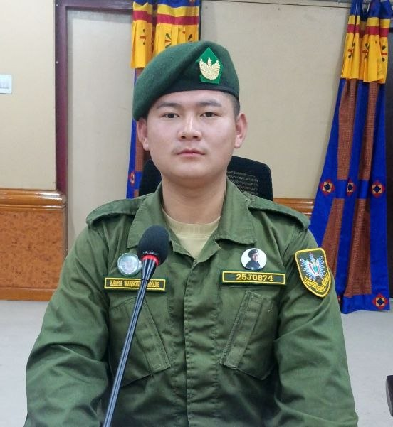
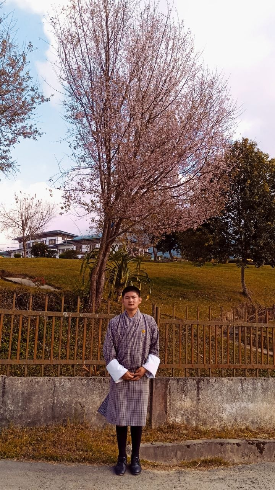

HTML
Creating the structure and content of web pages.
WELCOME TO MY PORTFOLIO
I'm a learner from Bhutan exploring coding, ICT, and creative digital projects. I'm building my skills one step at a time and turning ideas into practical projects. Moreover, Secured first place at Gedu College of Business Studies for pitching Aqua Nest Farm and successfully established a real-world trout farming venture.


My name is Karma Wangchuk Tamang. I completed Class 12 at Bhutan Baccalaureate School (Drukjegang Central High School).
I am interested in technology, web development, and learning how digital tools can solve real problems. I enjoy practising HTML, CSS, and JavaScript while improving my creativity and problem-solving skills.
My goal is to keep learning, build useful projects, and grow into a confident technology professional.
Creating the structure and content of web pages.
Styling pages with layouts, colours, and responsive design.
Adding interaction and functionality to websites.
Developing digital skills and learning to use technology effectively.
Completed my higher secondary education and began exploring possible career paths.
Successfully completed a three-month Gyalsung training program at Jamtsholing Gyalsung Academy, gaining valuable practical experience and personal development.
Dedicated one and a half months of service after completing Gyalsung training, then resigned to pursue my entrepreneurial goals and establish my own business.
I successfully turned my idea into a real-world venture by establishing a trout farming initiative, gaining practical experience in entrepreneurship, business development, and aquaculture.
Practising the fundamentals of web development and building confidence through hands-on exercises.
Applying what I learn to personal websites and other practical digital projects.
A responsive website to introduce myself, show my skills, and share my learning journey.
A domestic tourism concept focused on helping people discover places and experiences across Bhutan.
Small HTML, CSS, and JavaScript exercises to practise layout, design, and interaction.
LET'S CONNECT
I'm always interested in learning, collaborating, and exploring new opportunities.
Email Mewangujustdipli@gmail.com